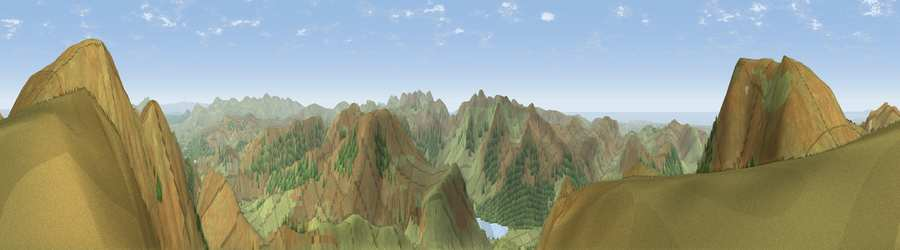

Viewpoint near Buttermere
#1148 in England · top 12% of its area beats it · near ButtermereWhere it is
The exact computed spot (NY 18750 19712). Click the marker for map links.
The view, rendered

A 360° render of this exact spot computed from the terrain model, tree cover and land cover — summer colours, afternoon light, calibrated against photographs of famous viewpoints. Real trees, hedges and buildings will differ in detail.
The panorama
Grey silhouette: terrain skyline in each direction (720 bearings, Earth curvature and refraction included). Dashed green: skyline with trees (+15 m) and buildings (+8 m) as obstacles. Blue strip: how far the ground is visible on each bearing.
Where the view opens
Wedge length = distance to the farthest visible ground on that bearing (vegetation-aware). Rings at 10, 25 and 50 km.
What fills the view
90% grassland · 8% woodland · 1% water
Angular shares of the visible panorama (visual magnitude), not map area. Landscape diversity 0.16 (0–1 Shannon).
Key numbers
More beautiful places nearby
The staircase of upgrades: each row has a higher view potential than everything closer. Driving times are estimates from straight-line distance, calibrated against real road routing — check an actual route before setting out.
| Place | Direction | Drive | Score |
|---|---|---|---|
| Crag Hill | NE · 1 km | ~2 min | 83.7 |
| Grasmoor | WNW · 1 km | ~4 min | 85.0 |
| Viewpoint near Loweswater | WNW · 2 km | ~5 min | 86.6 |
| Blake Fell | W · 8 km | ~16 min | 86.9 |
| Crag Fell | WSW · 10 km | ~20 min | 89.1 |
| Long Side | NNE · 11 km | ~20 min | 89.5 |
| Viewpoint near Finsthwaite | SE · 37 km | ~56 min | 90.3 |
| The Knoll | S · 433 km | ~408 min | 91.0 |
54.56609, -3.25814 · source: screening · position refined by local search. Computed location — check access rights before visiting.